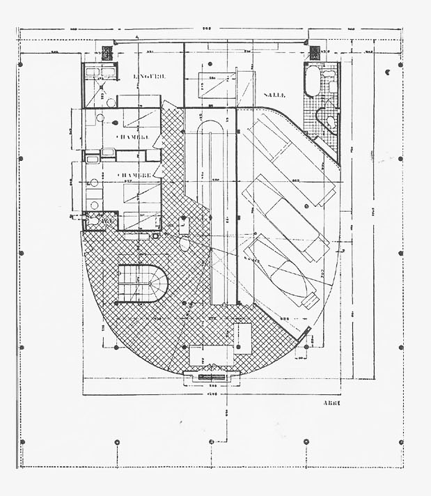

aw_2412_trc
"Information Highway. Information Highway!" featured in TRACE Issue 2
“And where shall I go now? The net is vast and limitless.” — Ghost in the Shell, 1996
…
Architecture is no longer about novel form. Since half a century ago, architecture has been, and should have been, pursued as a masterful manipulation of information.
From August to October of 2024, Farshid Moussavi of Harvard Graduate School of Design held an exhibition, named “Architecture as an Instruction-Based Art.”1 With the rise of professionalism in the late 19th century, the design of architecture became further and further detached from the actual construction process. In most contemporary practices, architects do not labor as constructors. Moussavi herself summarized it the best: “the unique role of architects is to conceive the concepts that dictate the precise arrangement of all elements in a building. These concepts not only define how a building will occupy its space and time, but how it will also influence the people and the environment that the building relates to.”2
Instructional art is not a new concept. It originated around the 60s with works such as Yoko Ono’s Grapefruit, or Sol Lewit with his reproducible wall drawings. Ono writes short instructions that force the readers to reinterpret their world through careful examination of details or actions rarely taken, and Lewit writes concise yet interpretive instructions for art-laborers to draw. Their contemporary, Nam June Paik, first exhibited his work Zen for TV in 1963, where he finely manipulated a cathode ray tube television to display only a single line of light. Zen for TV lives on, and is able to be reproduced year after year for exhibitions, for it is not the TV that is the art, but rather Nam’s diagrams and instructions. These instructions tell galleries how to reproduce his results, allowing laborers to reproduce his art again and again across many cathode ray tubes through the ages.3

A decade later, Venturi and Scott Brown published Learning from Las Vegas,4 a book architecture students mostly remember for its differentiation between the duck and the decorated shed. Yet, the key argument Venturi and Scott Brown proposed through the example of Las Vegas is that architecture is no longer tied directly to the constraints of physical matters, but rather it is freed to a space of pure semiosis, of information and signs. Their claim parallels the development in the art world. Art and architecture can live on in the conceptual, the instructional. Nam further developed his ideas on media and information. In 1974, he submitted a report titled “Media Planning for the Post Industrial Society—The 21st Century is now only 26 years away”5 to the Art Program of the Rockefeller Foundation. In it, Nam projected a far more advanced development of mass-media technology in the American landscape dubbed the “electronic superhighway:” a media network made of “audio cassettes, telex, data pooling, continental satellites, microfiches, private microwaves and eventually, fiber optics on laser frequencies.” In 1989, the World Wide Web was invented, establishing the foundations of this superhighway. Today, people sprint down this highway at incomprehensible speeds, with all information and signs of the world flashing past their eyes almost in a blur, existing yet intangible, illegible.
But architects should not follow the flow of the information highway. In this accelerating world, time and space and images and information are compressed before our eyes in our phones and computers. Buildings do not subscribe to that acceleration, they take a long time to realize. Buildings are slow and careful. To design and construct a building is to navigate through the financial systems that fund the building, the material sourcing, logistics, and assembly that make up the building, the labor conditions and organizations of architectural and construction workers who form the building, and the social and political impacts on communities that engage with the building. Architecture is the highest form of instructional art. Moussavi’s exhibition is not merely an exhibition of instructions for laborers or rudimentary concepts, but also a detailed delineation of information systems that literally control every aspect of our daily lives. Architecture is able to operate as instructional art, because architecture is information.
More and more critical architectural practices today advocate for the reuse of existing structures instead of building new ones. Such conversations are typically framed in the urgency of the climate catastrophe, that reuse should be a preferred alternative to new because of reuse’s friendlier environmental impacts. Such a narrative is a result of an unclear observation of the progression in architectural theories—reuse is not the alternative. It is the next stage of the new. It is more refined and more empowering to architects, for reuse is the re-organization of existing structure, program, and semiosis, all information systems that dictate the new. To pursue reuse is to finally clarify this information, to distill the systems and their parts, and to master the instructional-art-nature of professional architectural practices.
In Log 47, Elisa Iturbe, who now teaches at GSD, wrote an incredibly insightful article named “Architecture and the Death of Carbon Modernity.”6 Iturbe took a critical examination of what she called “carbon form.” With each shift in humanity’s means to capture energy comes a new spatial and architectural paradigm, the current paradigm being that of the carbon. Iturbe argued you can see it in various architectural typologies as well as daily objects: fast food chains, motels, department stores, and the internet. More importantly, these physical forms are “carbon forms” because they exist as, and are the product of, the cultural or behavioral patterns that propagate petro-culture. As stated by Iturbe, “a spinach leaf in itself is not a carbon form. But a spinach leaf grown with petroleum-based pesticides and fertilizers, sown and harvested with gasoline-fueled machinery, packed in a plastic container, delivered on a truck, and sold in an air-conditioned Walmart superstore surrounded by open expanses of asphalt is, if not a carbon form in itself, a commodity that circulates within a complex network of carbon forms and defines specific relationships within that network.”
The same goes for the built environment. The Palazzo Barberini in Rome, built before fossil fuels, includes a ramp with the precise slope and width for a horse carriage. The dimensionalized form of Palazzo Barberini registers directly to the power and movement of humans and animals. Carbon revolutionized this mobility. Villa Savoye, built in 1929, is a carbon form as its ground floor plan explicitly registers with the turning radius of automobiles. Architecture is not the representation of energy—it is the energy system itself. The Modernists, in their time, were praised for their ability to challenge existing social fabrics through heroic novel forms. With our current development in historical and theoretical insights, we now see that Modernism was not really about creating a “new,” as our limited scope led us to believe. Modernism was simply a response to the newly arisen carbon systems, giving them physical form.7
To save us from the climate catastrophe, we need to move away from petroculture, carbon systems, and enter a new age of better energy, or even “no energy,” systems. Similar to how the Modernists gave form to carbon, architects today must overcome petroculture-thinking and generate a new form for the new age. It will take architects who do not merely follow the information highway, but rather those who guide the traffic itself. Architects need to understand the myths of the new, be willing to delve deep into the systems, and wield the instructions which dictate these systems. Reuse is the current best approach to save us from climate catastrophe, not simply because it gives less carbon footprint as an alternative, but because its fundamental underpinning is progression trying to break free from carbon forms. When we use material, we contend with information. Petroculture has pushed us so far that building materials are inseparable from global sourcing. Around 1970, the International Organization for Standardization systematized shipping containers so that each container had a unique and traceable number. If you construct a data cloud of all containers in existence, you could literally predict the form of tomorrow’s world. What if reuse does not simply imply updating existing structures, but rather that all materials in a building are serialized, similar to containers, so that when taken apart the materials are standardized and reorganizable today, tomorrow, and indefinitely? What if the organization of these materials, once completely serialized, can create buildings easily reorganizable to satiate the accelerating rate in the changes of human desires, desires to consume new and differentiated programs? Can we read the forms of these new buildings not through permanent and extractive fixtures, but rather through semiotic understandings of instructions?
The information highway’s compression of time and space—its trajectory towards hyper-consumption—gives rise to the climate catastrophe that needs new solutions, new forms. This new “information form” is reuse, or rather a more developed version of reuse. It is a form of minimum extraction, of systems and parts infinitely reorganizable and reproducible. “The net is vast and limitless,” but we have yet taken that first step.
1Architecture as an Instruction-Based Art. 25 Aug.-15 Oct. 2024, Druker Design
Gallery,
Harvard Graduate School of Design.
2Moussavi, Farshid. “Architecture As an Instruction-Based Art.” Harvard GSD,
Youtube, 4 Dec.
2024, www.youtube.com/watch?v=xjPqudWHHl8&t=3219s.
3Image below, Lower Strip, looking north, 1966. Photo by Denise Scott Brown. From Scott
Brown, Denise.
“The Tyranny of the Template: The Graphic Design of the First Edition of ‘Learning From Las Vegas,’”
Learning from Las Vegas. MIT Press, 2017.
4Steven Izenour, Denise Scott Brown, and Robert Venturi. Learning from Las Vegas.
Art,
Architecture and Engineering Library, 1972.
5Nam June Paik. Werke 1946–1976. Musik – Fluxus – Video, Kölnischer Kunstverein,
Köln, 1976.
6Iturbe, Elisa. “Architecture and the Death of Carbon Modernity.” Log 47, Overcoming
Carbon Form, Fall 2019. pp.10-23.
7Image below, Le Corbusier, Villa Savoye, Poissy, France, 1929. Ground floor plan.